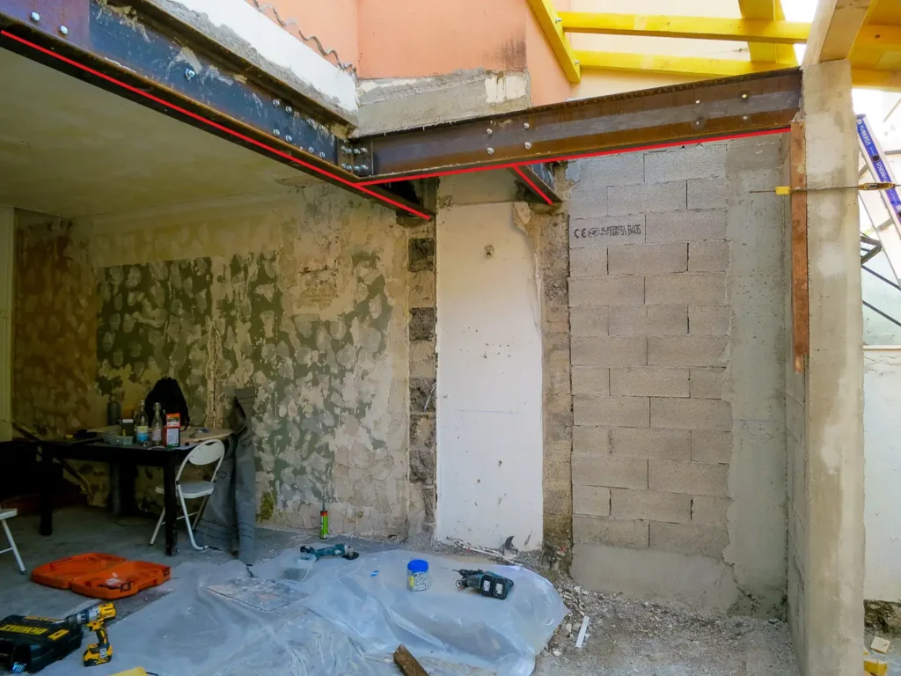
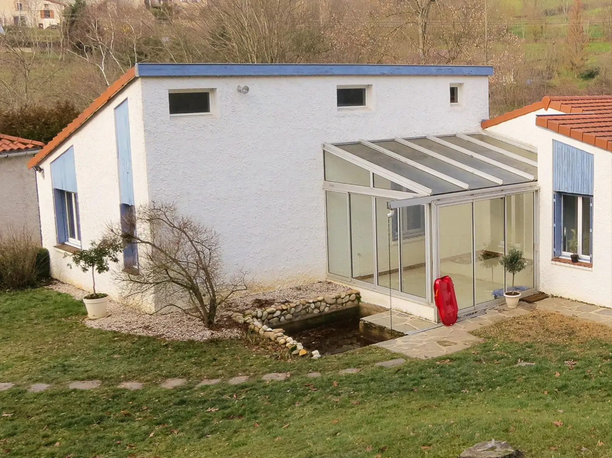
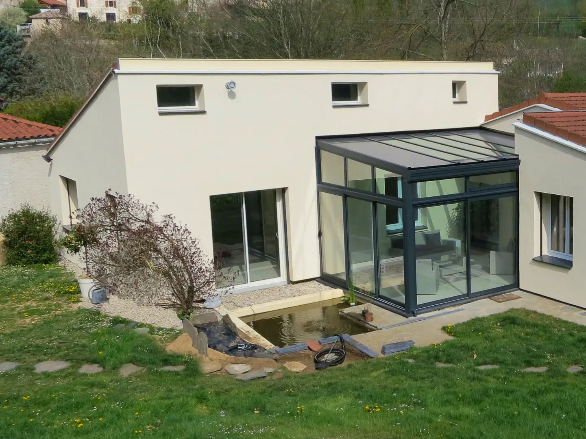
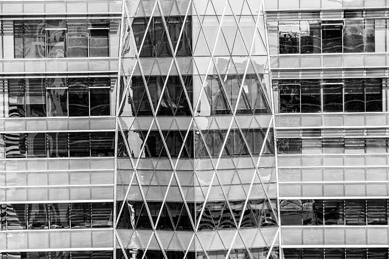

Qu'est-ce qu'une reprise en sous oeuvre ?
Demander un devisLors de la construction du bâtiment, le gros-oeuvre (la structure) est construite dans un ordre logique (fondation, puis murs du RDC, planchers puis murs des étages, charpente et finalement couverture). Mais si après sa construction, vous souhaitez modifier un élément de la structure, il est évidemment impossible de démonter ceux qu'elle supporte.
Il faut alors « reprendre en sous-oeuvre » le mur porteur, la dalle du plancher, les fondations ou la charpente, c'est-à-dire renforcer la structure porteuse en posant des IPN (ou tout autre poutrelle métallique), consolider les fondations ou rajouter des poutres à la charpente.

Créer une ouverture dans un mur porteur
Agrandir une ouverture existante
Percer une baie vitrée dans un mur extérieur
Percer un trou (une trémie) dans un plancher, pour y installer un escalier
Abattre un mur porteur intérieur (appelé mur de refend)
Décaisser le sol de la cave en descendant sous le niveau des fondations
Transformer votre charpente, pour y aménager des combles sans déposer la couverture


Est-il utile de préciser que des artisans sérieux, hautement qualifiés et de confiance sont « juste » indispensables pour des travaux sereins ?
En plus de vous apporter cette sélection d'entreprises, nous vous aidons à identifier les corps de métiers directement impliqués dans cette reprise en sous-oeuvre (bureau d'étude structure, bureau d'étude géotechnique, architecte DPLG ou DE, maçon, serrurier / métallier, charpentier, etc.).
Nous pouvons également vous accompagner dans les différentes demandes administratives.
